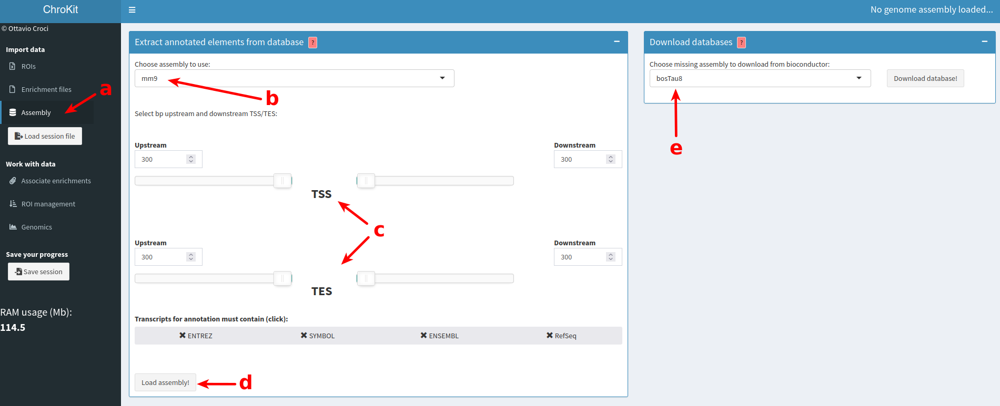
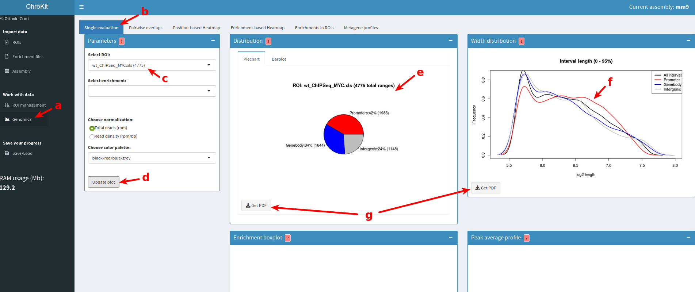
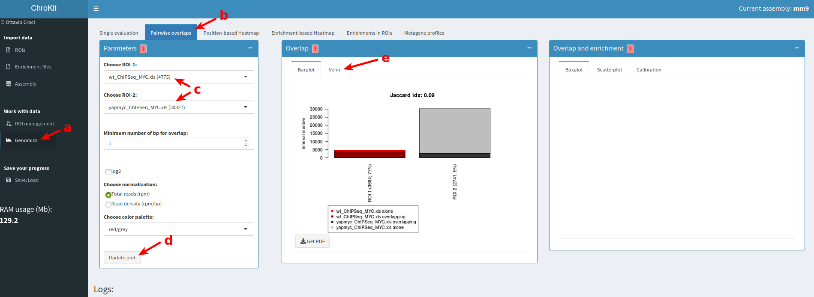
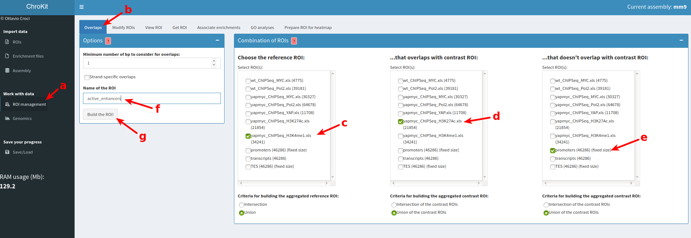
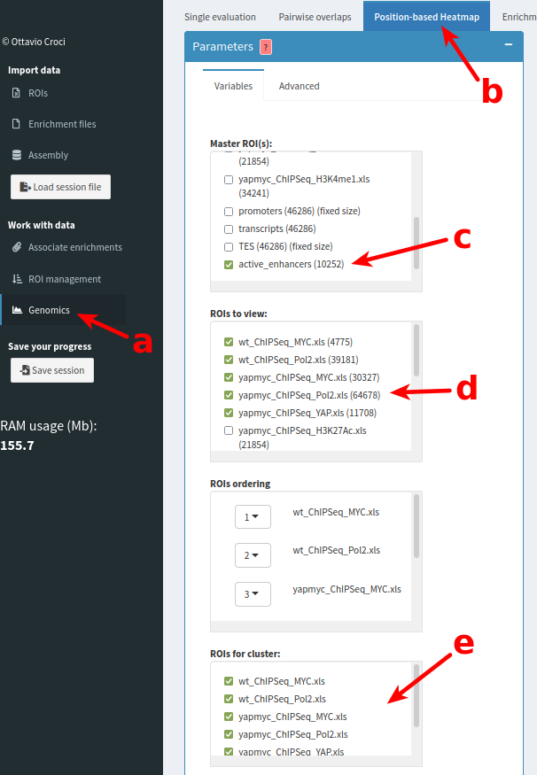
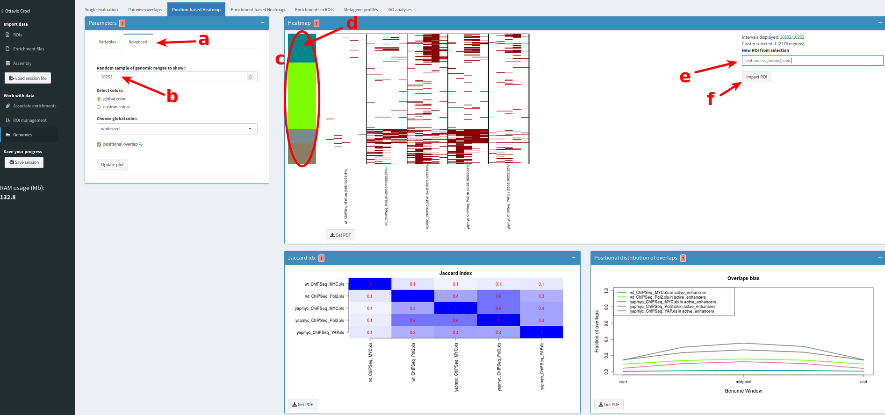
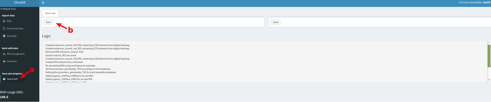
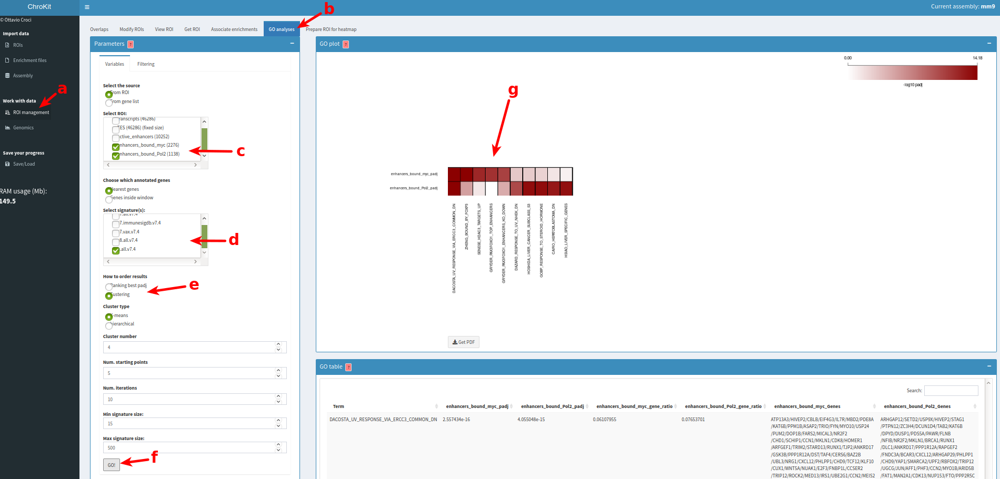
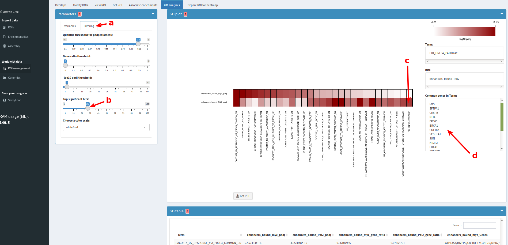

In this tutorial you will learn how to open, manage and analyse genomic regions (peaks of transcription factors and histone modifications from ChIP-Seq experiments). Topics:
ChIP-Seq peaks files of transcription factors and histone modifications in liver of wild-type mice and transgenic mice (tet Yap/Myc) in which the Myc and Yap transcription factors are overexpressed for 2 days (wt_ChIPSeq_MYC.xls, wt_ChIPSeq_Pol2.xls, yapmyc_ChIPSeq_MYC.xls, yapmyc_ChIPSeq_Pol2.xls and yapmyc_ChIPSeq_YAP.xls, yapmyc_ChIPSeq_H3K27Ac.xls and yapmyc_ChIPSeq_H3K4me1.xls). These files can be downloaded at this link
By clicking "ROIs" from the side menu under "Import data" section (fig. 1a), you will open five windows which will be displayed next to the side menu. In the "From file" window, click "Choose file" (fig. 1b) and open the wt_ChIPSeq_MYC.xls file located in the directory in which you have downloaded the required ChIP-Seq files. The preview of the peak table will open on the right (fig. 1c). Click "Import as ROI" (fig. 1d) to load the ROI into ChroKit. Repeat these operations for wt_ChIPSeq_Pol2.xls, yapmyc_ChIPSeq_MYC.xls, yapmyc_ChIPSeq_Pol2.xls and yapmyc_ChIPSeq_YAP.xls files. To open the histone modifications peaks (yapmyc_ChIPSeq_H3K27Ac.xls and yapmyc_ChIPSeq_H3K4me1.xls) repeat the same procedure, but unchecking the "Header" option (fig. 1e) and setting the "Lines to skip" (fig. 1f) to 1. This because histone modification peaks files do not have a header (names of the columns) but an extra line which must be ignored.
Figure 1
The ChIP-Seq peaks loaded have been generated using the genome assembly mm9. To load the annotated elements of this genome assembly, click "Assembly" on the side menu (fig. 2a). Two windows will open on the right. In the "Extract annotated elements from database" window, choose the mm9 genome assembly (fig. 2b) and select the genomic window [-300;+300] from TSS (transcription start sites) and TES (transcription end sites) to define promoters and transcription end regions (fig. 2c); leave the default options and click the "Load assembly!" button (fig. 2d). Note: by using the default values, promoters and termination regions will be defined as regions of 600 bp surrounding the TSS and the TES. Three new ROIs will be created: the promoters, transcripts and TES of the mm9 genome assembly. (At this point, all the ROIs uploaded or created inside the program will be automatically annotated according to the nearest TSS for each genomic range)

Figure 2
To analyse the distribution of Myc ChIP-Seq peaks in annotated genomic elements (i.e. promoters, genebody or intragenic regions), click "Genomics" from the side menu ("Work with data" section, fig. 3a) and select the "Single evaluation" tab (fig. 3b). In the "Select ROI" menu, choose the wt_ChIPSeq_MYC.xls ROI (fig. 3c) and click "Update plot" (fig. 3d). Plots will appear on the right, showing the distribution of Myc peaks in control condition on the promoters, genebodies and intergenic regions (fig.3e). The distribution of the peaks' width will be displayed in the right window (fig. 3f). Click "Download" button to download the plots in an editable PDF format (fig. 3g).

Figure 3
Click "Genomics" from the side menu ("Work with data" section, fig. 4a) and choose the "Pairwise overlaps" tab (fig. 4b). Then select the two ROIs for which the overlap must be calculated (in this case wt_ChIPSeq_MYC.xls (ROI-1) and yapmyc_ChIPSeq_MYC.xls (ROI-2), fig. 4c), then click the "Update plot" button (fig. 4d). The window on the right will generate the barplot showing the overlap of Myc peaks identified in wild type and transgenic mice. This overlap can be also shown as a Venn Diagram (fig. 4e). Results show that (i) in transgenic mice the majority of Myc peaks identified in wild type animals are also found in transgenic mice and (ii) severaladditional peaks are detected in transgenic cells.

Figure 4
Active enhancers are usually defined as genomic elements marked by histone modifications as H3K4me1 and H3K27Ac, and located outside promoter regions. To define active enhancers in tet-Yap/Myc liver cells, we will exploit the function for calculating overlaps implemented in ChroKit. Click "ROI management" menu ("Work with data" section, fig. 5a) and select the "Overlaps" tab (fig. 5b). Then, under the "Choose the reference ROI" menu, select yapmyc_ChIPSeq_H3K4me1.xls ROI (fig. 5c); then, select yapmyc_ChIPSeq_H3K27Ac.xls ROI from the "...that overlaps with contrast ROI" menu (we want K4me1 peaks to be also marked by K27 acetylation) (fig. 5d) and select "promoters" ROI under the "...that doesn't overlap with contrast ROI" menu (since enhancers should not overlap with promoters) (fig. 5e). Then, name the new ROI (for example "active_enhancers", fig. 5f) and click the "Build the ROI!" button (fig. 5g). The new ROI "active enhancers" will be immediately created and from now on available in all the menus. Using these criteria we were able to find 10252 active enhancers in tet-Yap/Myc transgenic mice.

Figure 5
Clustered heatmaps can be used to interactively analyse the overlaps between multiple genomic regions, as for instance binding of TFs (Yap and Myc) and RNAPol2 to enhancers. On the side menu, click "Genomics" ("Work with data" section fig. 6a) and select the "Position-based Heatmap" tab (fig. 6b). Select the "active enhancers" ROI created before (step 4 of this tutorial) as the master ROI (fig. 6c) and then the ChIP-Seq peaks (wt_ChIPSeq_MYC.xls, wt_ChIPSeq_Pol2.xls, yapmyc_ChIPSeq_MYC.xls, yapmyc_ChIPSeq_Pol2.xls and yapmyc_ChIPSeq_YAP.xls) as "ROI to view" (fig. 6d). Select the ROIs that will be used for the clustering (select all, fig. 6e) and keep the default clustering options.

Figure 6
To view all the defined enhancers (and not a random sample of them), you have to click the "Advanced" tab (fig. 7a) and set the "Random sample of genomic ranges to show" to 10252 (the number of genomic ranges of the active enhancers) or even higher (fig. 7b). Click the "Update plot" button to generate the heatmap (which will be displayed on the right).
Clusters indicated by color bars on the left of the heatmap (fig. 7c). Click the corresponding bar (first cluster) to extract the genomic ranges corresponding to enhancers bound by Myc (fig. 7d); type the name of the new ROI ("enhancers_bound_myc", fig. 7e) and click "Import ROI" (fig. 7f): a new ROI of 2276 genomic ranges will be generated.

Figure 7
Repeat the same operation for the cluster number three and name the new ROI "enhancers_bound_Pol2".
It is useful to save the current working session in an rds file, so that ongoing analyses can be completed within multiple sessions. To do this, go to the "Save/Load" menu under "Save your progress" section (fig. 8a) and click the "Save" button (fig. 8b).

Figure 8
You will be prompted to a menu in which you will be able to name the current sessions and select the directory in which save it (as an rds file).
A common question is whether the subsets of enhancers bound by a particular combination of transcription factors may regulate specific genes programs. To answer this question, it is possible to carry out a gene ontology analysis within ChroKit, starting either from a list of genes or the genes associated by proximity to ROIs. To do this, click "ROI management" (side menu under "Work with data" section, fig. 9a) and select the "GO analyses" tab (fig. 9b). Select the enhancer subsets defined before ("enhancers_bound_myc" and "enhancers_bound_Pol2" ROI) (fig. 9c) and the c2.all.v7.4, c5.all.v7.4 and h.all.v7.4 signatures collections from MSigDB (fig. 9d). Choose "Clustering" (fig. 9e) leaving default parameters and finally click the "GO!" button (fig. 9f).

Figure 9
A heatmap with gene ontology results will appear on the right (fig. 9g). Go to the "Filtering" tab (fig. 10a) to control advanced parameters; for example, increase the number of top hits from 10 (default) to 28 (fig. 10b).
To view the genes associated to a selected ROI and belonging to a particular ontology, just click the corresponding square in the heatmap (fig. 10c); the list of the genes will appear in a window on the right (fig. 10d).

Figure 10
To download the Gene ontology results in a tabular format, go to the "GO table" window below and click the "Download" button.